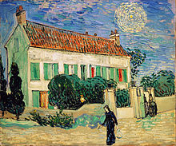

Peinture
Van Gogh a beaucoup travaillé pour perfectionner son dessin et sa peinture, notamment en utilisant des
livres ou des manuels. Il a, par exemple, copié toutes les pages du Cours de dessin de Charles BargueH
1,WM 4. Sa peinture est le fruit d'un travail long, méticuleux et acharné. Il s'est essayé à plusieurs
sortes de matériaux comme la pierre noire, la craie lithographique et la plume de roseau. Il était
sensible et attentif à l’environnement artistique de la fin du xixe siècle. Son style, qui se
caractérise surtout par l'utilisation des couleurs et les touches de ses pinceaux, a une influence
importante sur l'art du xxe siècleH 2. Les lettres de Van Gogh nous apprennent l'admiration de ce
dernier pour Rembrandt, Frans Hals, Eugène Delacroix, Jean-François Millet59, mais aussi pour Anton
Mauve, Émile Bernard et Paul Gauguin. Il s'est inspiré des maîtres hollandais du xviie siècleJLB 15. Ses
peintures témoignent de son expérience de la vie quotidienne60 et ses tableaux portent la marque de sa
personnalité tourmentée et instable61. Il a notamment réalisé Les Mangeurs de pommes de terre (1885), La
Chambre de Van Gogh à Arles (1888), Les Tournesols (1888-1889), Autoportrait à l'oreille bandée (1889),
La Nuit étoilée (1889), Portrait du docteur Gachet avec branche de digitale (1890) et L'Église
d'Auvers-sur-Oise (1890).
Article détaillé : Liste des tableaux de Vincent van Gogh.
Signature de Van Gogh. Il a régulièrement signé ses travaux par « Vincent ».
Au xxie siècle, il reste de lui des peintures, des œuvres sur papier, des croquis et des lettres. Van
Gogh a produit plus de 2 000 œuvres d'art : à peu près 900 peintures et 1 100 dessins et croquisJLB 16
qui s'étendent sur 10 ans de travail. Il avait l'habitude d'échanger ses peintures avec d'autres
peintres, comme cela se faisait fréquemment alors, notamment Émile Bernard et Paul Gauguin.
Style
L'art de Van Gogh a évolué constamment au cours de sa carrière artistique. Par exemple, il s'intéresse
aux estampes japonaises et aux gravures anglaises. Il prend plaisir à exécuter des reproductions
auxquelles il souhaite apporter une contribution artistique originale. Il réalise plusieurs séries de
tableaux, notamment des autoportraits et Les Tournesols. Par ailleurs, il accorde aussi une place
importante aux tableaux nocturnes62. Il applique les couleurs par touches de pinceaux, sans mélanger sur
la palette. Les couleurs se fondent à distance dans l'œil du spectateur.
À l'automne 1882, Theo commence à financer Vincent afin que ce dernier puisse développer son art
sereinement. Au début de l'année 1883, il commence à travailler sur des compositions multi-figures,
surtout des dessins. D'après Theo, ces travaux manquent de vivacité et de fraîcheur. À cause de ces
commentaires, Vincent les détruit et se tourne vers la peinture à l'huile. À Nuenen, il réalise de
nombreuses peintures de grande taille mais il en détruit également. Parmi les toiles de l'époque, on
peut citer Les Mangeurs de pommes de terre, les différentes têtes de paysans et les diverses
interprétations de la chaumière.

Maison sous un ciel nocturne, 1890, huile sur toile, 59,5 × 73 cm, Saint-Pétersbourg, musée de
l'Ermitage (F766/JH2031).
Pensant qu'il manque de connaissance sur les techniques de la peinture, il se rend à Paris pour
continuer à apprendre et développer son style. Sa tendance à développer les techniques et les théories
des impressionnistes et les néo-impressionnistes dure peu. À Arles, Van Gogh reprend d'anciennes idées.
Il recommence par exemple à peindre une série de tableaux sur des sujets similaires. La progression de
son style se voit dans ses autoportraits. En 1884, à Nuenen, il avait déjà travaillé sur une série pour
décorer la salle à manger d'un de ses amis à Eindhoven. Toujours à Arles, il transforme ses Vergers
fleurissants en triptyques. Il réalise une autre série sur la famille Roulin et il travaille avec
Gauguin sur la décoration de la maison jaune. Les peintures faites pendant la période de Saint-Rémy sont
souvent caractérisées par des tourbillons et des spirales. Les motifs de luminosité de ces dernières
images ont été montrés conforme au modèle statistique de turbulence de Kolmogorov63.
L'historien d'art Albert Boime est l'un des premiers à montrer que Van Gogh basait ses travaux sur la
réalité64. Par exemple, le tableau Maison sous un ciel nocturne montre une maison blanche au crépuscule
avec une étoile bien visible, entourée d'une auréole jaune. Les astronomes du Southwest Texas State
University à San Marcos ont établi que cette étoile est Vénus, très brillante le soir du 16 juin 1890,
date de la création de ce tableau65.
Autoportrait
Van Gogh a peint des autoportraits à plusieurs reprises. Beaucoup de ces toiles sont de petites
dimensions : ces essais lui permettent d'expérimenter les techniques artistiques qu'il découvreH 3. Ses
autoportraits reflètent ses choix et ses ambitions artistiques qui évoluent en permanenceH 3. Les
peintures varient en intensité et en couleur et l'artiste se représente avec barbe, sans barbe, avec
différents chapeaux, avec son bandage qui représente la période où il s'est coupé l'oreille, etc. La
plupart de ses autoportraits sont faits à Paris. Tous ceux réalisés à Saint-Rémy-de-Provence montrent la
tête de l'artiste de gauche, c'est-à-dire du côté opposé de l'oreille mutilée. Plusieurs des
autoportraits de Van Gogh représentent son visage comme se reflétant dans un miroir, c'est-à-dire son
côté gauche à droite et son côté droit à gauche. Il s'est peint 37 fois en tout66. Cependant, durant les
deux derniers mois de sa vie, à Auvers-sur-Oise, et malgré sa productivité, il ne peint aucun
autoportrait. Son Autoportrait au visage glabre, qui date de fin septembre 1889, est une des toiles les
plus chères au monde, vendue à 71,5 millions de dollars en 1998 à New York67.